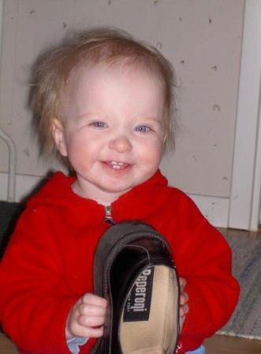
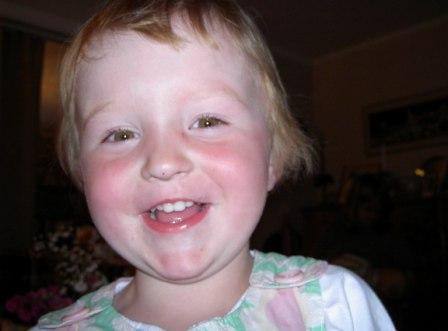
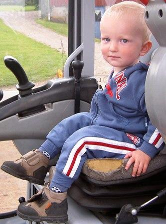
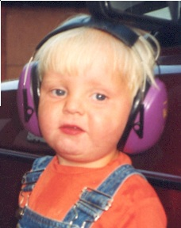

Född 1922-12-30 i Hålegården 1, Hägrunga, Algutstorp (P)
Död 2014-01-17 i Mellomgård, Jonstorp, Hol (P) 1 .
Verkstadsägare

|
Elon Gunnar Eliasson.
Född 1922-12-30 i Hålegården 1, Hägrunga, Algutstorp (P) Död 2014-01-17 i Mellomgård, Jonstorp, Hol (P) 1 . Verkstadsägare
|
| 1 |
Gunnar Stefan Eliasson.
Född 1964-05-07 i Hålegården 1, Hägrunga, Algutstorp (P) Programmerare Produktionstekniker 2011-02-15 i Vårgårda 1 . 
|
| 2 |
Emma Sofia Eliasson.
Född 2002-02-10 i Hålegården 1, Hägrunga, Algutstorp (P)  |
| 2 |
Maja Stina Eliasson.
Född 2004-02-22 i Hålegården 1, Hägrunga, Algutstorp (P)  |
| 2 |
Hjalmar Claes Eliasson.
Född 2005-12-06 i Hålegården 1, Hägrunga, Algutstorp (P) 1 .  |
| 1 |
Anders Håkan Eliasson.
Född 1967-06-30 i Hägrunga, Algutstorp Trädgårdsskötare |
| 2 |
Martin Eliasson.
Född 1997-02-14 i Östergården, Kilatorp, Algutstorp (P)  |
| 2 |
Rebecka Eliasson.
Född 2000-09-25 i Östergården, Kilatorp, Algutstorp (P) |
Framställd 2026-03-08 med hjälp av Disgen version 2025.